Thank You for Installing Web Highlighter
Your private, on-device AI companion for capturing insights, annotating research, and highlighting YouTube video transcripts with zero cloud tracking.
📌 Step 1: Pin to Your Toolbar
Keep Web Highlighter always 1-click away while browsing and researching:

Getting Started with Key Features
Quick Highlighting
Select any text on any webpage to bring up the floating color palette, or press Alt + H for instant marking.
Side Panel Command Center
Click the pinned extension icon anytime to open the Chrome Side Panel. Search semantically, filter by tags, and jump back to your saved snippets.
YouTube Video Highlights
Web Highlighter deeply integrates with YouTube! Use the dedicated Highlight video button in the player control bar or the red YT toolbar badge to highlight transcripts.
100% On-Device & Private
Your data never leaves your browser. All highlights are saved in local IndexedDB, and AI summaries run locally on your device via On-Device AI & WebGPU.
🧪 Interactive Highlight Playground
Try out how highlights look right here! Select text or click the palette swatches below:
Web Highlighter helps you capture essential ideas while reading articles, documentation, and video transcripts. You can customize colors, add notes, search semantically, and generate AI summaries with complete local privacy.